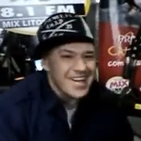
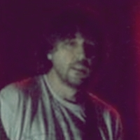
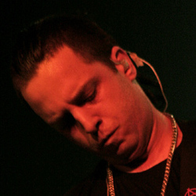
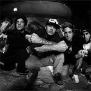
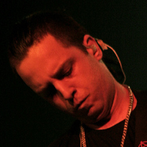
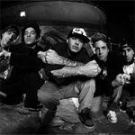

Charlie Brown Jr., a voz que ainda ecoa na eternidade.
Sobre
Charlie Brown Jr. foi uma banda brasileira formada em 1992 em Santos, misturando estilos como rock, rap, reggae e hardcore. Com letras sinceras e marcantes, conquistou o público jovem com temas sobre rebeldia, cotidiano e superação. Seu vocalista, Chorão, foi figura central e símbolo da banda até seu falecimento em 2013.
História e Carreira
A banda teve início com Chorão e Champignon, passando por diversas formações. Estourou nacionalmente com o álbum Transpiração Contínua Prolongada (1997), que vendeu mais de 500 mil cópias. Com sucessos como "Zóio de Lula", "Te Levar" e "Dias de Luta, Dias de Glória", a banda alcançou as principais rádios do país e participou de grandes festivais.
Apesar dos conflitos internos e mudanças de integrantes, a banda manteve relevância até 2013. Após a morte de Chorão, os membros remanescentes criaram projetos como A Banca, e atualmente celebram o legado da banda com turnês comemorativas.
Principais Conquistas
| Conquista | Ano |
|---|---|
| Formação e estreia oficial da banda | 1992 |
| Lançamento do primeiro álbum (500 mil cópias vendidas) | 1997 |
| MTV Video Music Brasil - Escolha da Audiência | 2001 |
| Grammy Latino - Melhor Álbum de Rock Brasileiro | 2005 |
| 2ª banda de rock brasileiro mais ouvida no exterior (Deezer) | 2015 |
| Dados atualizados em 15 de setembro de 2025 | |
Curiosidades
- O nome "Charlie Brown Jr." surgiu após Chorão atropelar uma barraca com o desenho do personagem Charlie Brown.
- Chorão foi skatista profissional antes da música, e levou a cultura do skate para dentro da banda.
- A música "Te Levar" foi tema do seriado Malhação por vários anos.
- Chorão criou o Chorão Skate Park em Santos.
- Mesmo após o fim, o grupo continua sendo celebrado por fãs e músicos em turnês especiais.
Fotos
  


